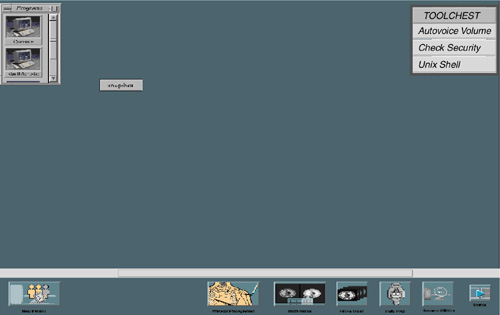
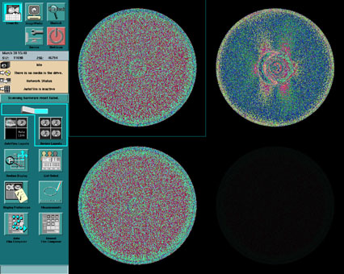
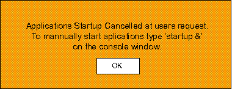
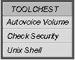
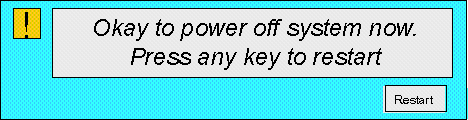

Operating Documentation
Direction 5114045-800, Rev# 10
LightSpeed 4.X Service Information (Advanced)
Operating Documentation |
When you power-on the console, the Host Computer (Octane) runs a selftest. After a successful selftest, it boots from its own local disk. On the OC, once IRIX is up, ctuser will automatically log-in and begin the auto-start of application software on the OC. A pop-up window appears notifying the user that he or she has five seconds to abort the auto-start.
When the system’s application platform is up (refer to Illustration 1 and Illustration 2), the ETC, STC, and OBC are commanded to perform a hardware reset. This takes approximately 60 seconds. Next, the Host will download firmware to the ETC, STC, and OBC. Finally, firmware is downloaded to the collimator and DAS subsystem controllers.
When applications are up and running, Scan RX is the default desktop. You can show the program’s folder or the Toolchest by positioning the mouse in either of the upper corners (refer to Illustration 1 and Illustration 2) and then pressing <ALT+ F3>. Hold down the< ALT> key and press the <F3> key at the same time. Use <ALT+ F3> as a toggle to move icons in and out of the foreground.
Illustration 1: Application Screen (Left Monitor Head)

Illustration 2: Application Screen (Right Monitor Head)

To shutdown the applications platform only, and leave IRIX up on the OC, select [UTILITIES] and [APPLICATION SHUTDOWN] . This will leave you at the IRIX desktop environment. If you need to restart applications, refer to Section 2.2. The need to shutdown applications only applies when running certain programs, such as reconfig.
Table 1 shows how applications processes in each of the subsystems are shut down as a result of selecting the softkeys ( [SERVICE DESKTOP] > [UTILITIES] > [APPLICATION SHUTDOWN] ).
Table 1: System Down Process Sequence
| State | OC | ICE | STC/ETC/OBC | DCB/CCB |
|---|---|---|---|---|
| Initial | Applications | Applications | Applications | Applications |
| Softkey Actions | [SERVICE DESKTOP] > [UTILITIES] > [APPLICATION SHUTDOWN] | |||
| Final | IRIX | VxWorks | VxWorks | |
You must be at the IRIX desktop environment.
From the Toolchest, select [UNIX SHELL] .
Type st to start system.
Table 2 shows how applications processes are restarted in each of the subsystems by entering st in a shell.
Table 2: Application Startup (from IRIX Level) Process Sequence
| State | OC | ICE | STC/ETC/OBC | DCB/CCB |
|---|---|---|---|---|
| Initial | IRIX | n/a | Firmware | |
| User Action | Open a shell and type st<ENTER> | |||
| Final | Apps | Apps | Apps | Apps |
You must be at the IRIX desktop environment.
From the toolchest, select [UNIX SHELL] .
Type sd to halt system.
Table 3 shows how the operating systems in each of the subsystems are shut down by entering sd in a shell.
Table 3: Halt to Boot (from IRIX Level) Process Sequence
| State | OC | ICE | STC/ETC/OBC | DCB/CCB |
|---|---|---|---|---|
| Initial | IRIX | n/a | VxWorks | Firmware |
| User Action | Open a shell> type sd <ENTER> | |||
| Final | PROM Monitor | PROM Monitor | Firmware | |
Applications software can be prevented from automatically shutting down the system, if an error occurs during startup. If applications software encounters an unrecoverable error during startup, it attempts to recover. However, sometimes the error is so severe that software must terminate and shut down the system. Thus preventing the use of tools to isolate the failure.
The procedure that follows can be used to prevent automatic shutdown.
Before the system startups CT applications software, a popup confirmation box is displayed. (See Illustration 3.)
Using the mouse, left click the [CANCEL] button within 5 seconds of the window being displayed
Immediately after clicking Cancel, a cancellation popup message box appears. (See Illustration 4.)
Using the mouse, left click the [OK] button.
From the TOOLCHEST, use the mouse and left click on the [UNIX SHELL] button. (See Illustration 5.)
At the prompt, in the Unix Shell, type: setenv NOHOSTSHUTDOWN<ENTER>
The above command prevents the applications startup process from shutting down if an error is encountered.
Now start applications software by typing: startup &<ENTER>
Applications software will startup and not terminate if an error is encountered.
Illustration 3: Cancel Applications Startup Screen
Illustration 4: Applications Startup Cancelled Acknowledgement Screen

Illustration 5: ToolChest

| Potential for loss of data. Because of the way in which the operating system software makes use of disk caching, follow the recommended shutdown procedure to give the system a chance to write any information in the cache buffers to the disk before you turn OFF power. | |
Use the following procedure to minimize the chance that the system leaves any files in a bad state.
Select [SHUTDOWN] on the right head to stop scanner applications and OS software.
A script starts that synchronizes the operating system file structure, and halts the operating system on the OC host computer. Table 4 shows the final state of each of the subsystems after selecting [SHUTDOWN] .
You may power off the console power switch when you see the message in Illustration 6.
You can turn off the System Mains Disconnect to remove all system power.
Table 4: System Shutdown (From Applications) Process Sequence
| STATE | OC | ICE | STC/ETC/OBC | DCB/CCB |
|---|---|---|---|---|
| Initial | Apps | Apps | Apps | Apps |
| User Action | Select [SHUTDOWN] | |||
| Final | PROM Monitor | PROM Monitor | VxWorks | |
Click [RESTART] using the mouse to bring up the operating system and applications. If you have just powered up the system, this happens automatically. You have an opportunity (five seconds) to stop applications autostart and remain at the IRIX desktop level.
Illustration 6: Power Off Message
